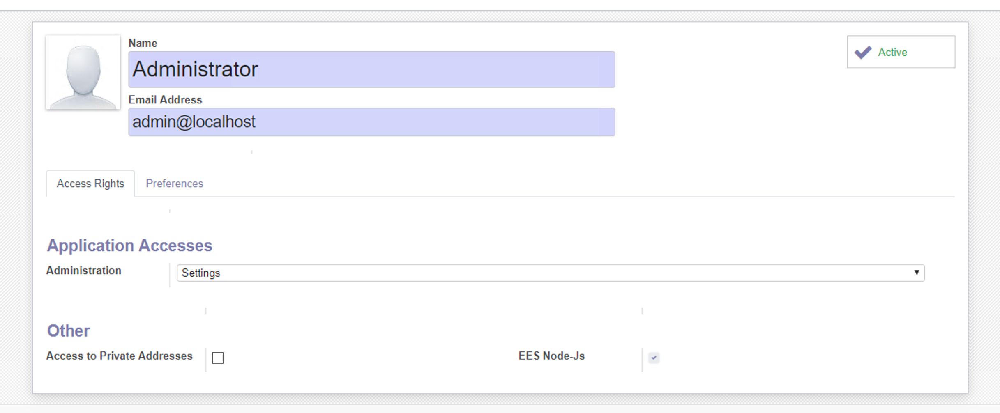
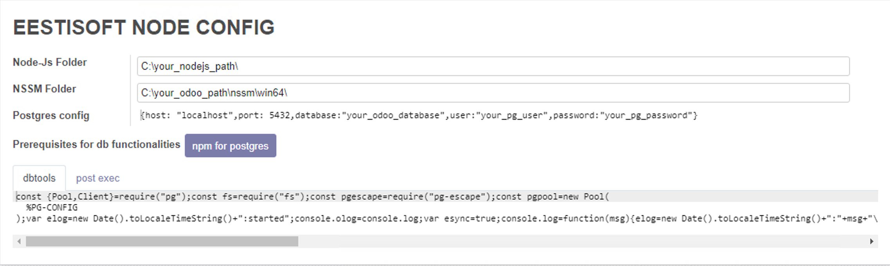
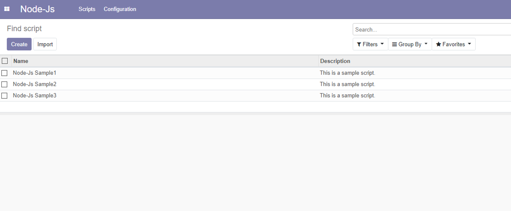
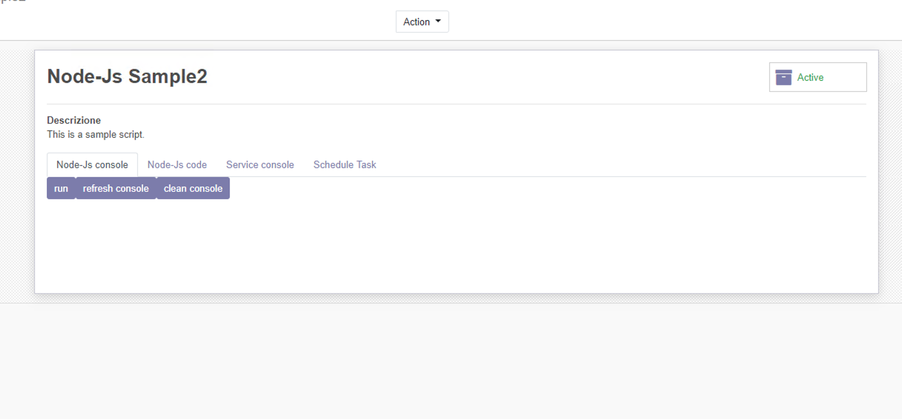
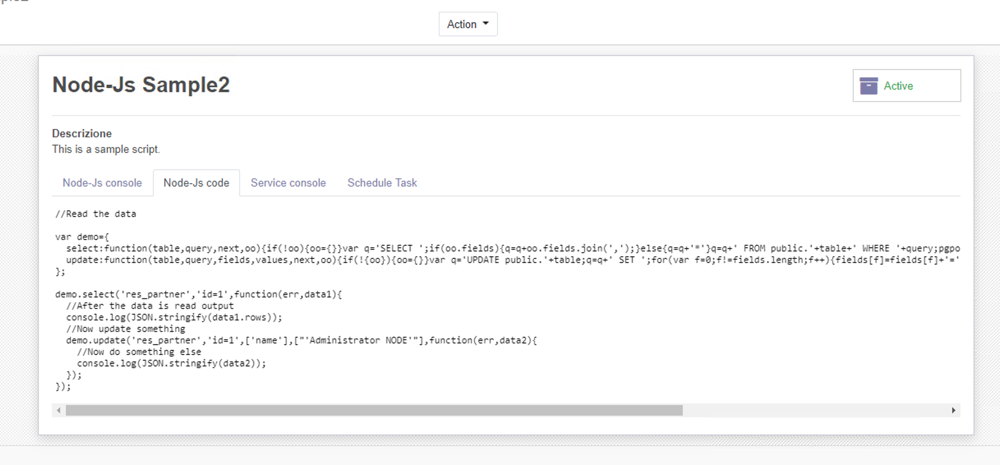
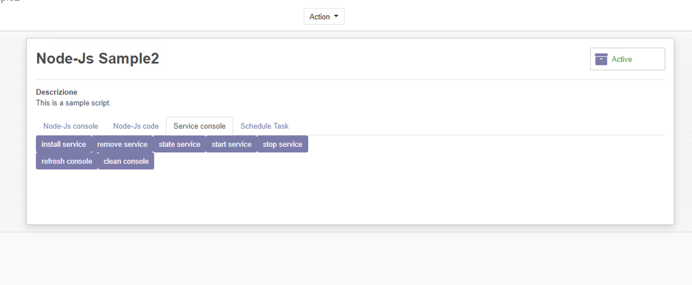

nodejs for odoo - by EESTISOFT
ees_odoo_node
This repository is an odoo module.
It allows to create, edit and run node-js scripts without leaving the odoo interface - also allows to configure the scripts as system services - currently works only in windows.
Prerequisite
Install nodejs and npm on the machine. (It can alternatively be put into a standalone nodejs folder)
Configuration
- Install the ees_odoo_node module as you would with any other module.
- In the user settings, be sure to enable the NodeJS group in the admin user and F5 to have the menu displayed.
- In the Node-Js\Config menu - be sure to insert the nodejs installation directiory. (path MUST end with "\")
- In the Node-Js\Config menu - click the npm button once (if you want you can alternatively verify the precence of module pg and pg-escape in the node_modules folder or npm it yourself.)
- In the Node-Js\Config menu - Be sure to input the correct parameters of the odoo database, this is necessary for having the output of console.log instructions to end up in the odoo db for you to read.


Usage
- In the Node-Js\Scripts Run some sample!
- Scripts can easily be run or installed as system services directly from the odoo interface.




TODO
- Linux compatibility.
- Autoconfiguration, when possible - for example the odoo db name could be automatically retrieved instead of manually be put in the config.
- Test buttons for checking the correctness of the nodejs config and the precence of pg and pg-escape
- Having the possibilty to npm new modules in the nodefolder, directly, without leaving the odoo interface.
- Having a separated console for console.log outputs coming from the service instance, and manually run instance.
- Better view of current state of a service, (if a script is intalled as service)
Maintainer
EESTISOFT